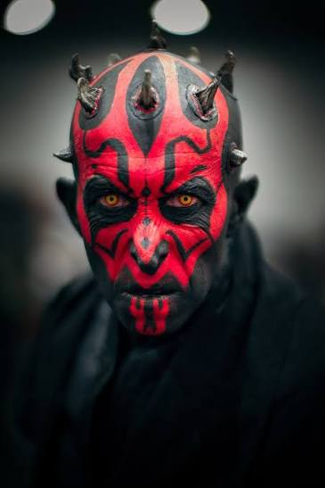

Recognizable face
Exposed red head; photo-specific black forehead, eye, cheek, and chin markings; amber eyes; short ivory-gray horns. Simplify skin texture while keeping the defining shapes.
Virtual office · third avatar · design handoff
The supplied face is the identity target. Rex and Paz are the finished style targets. Maul will replace the research analyst's display identity while retaining its violet book badge and Opportunity Scout responsibilities.
Preserve Maul's facial landmarks. Match the compact, rounded 3D construction, gentle highlights, camera, and light direction of the two armored avatars.



Exposed red head; photo-specific black forehead, eye, cheek, and chin markings; amber eyes; short ivory-gray horns. Simplify skin texture while keeping the defining shapes.
Oversized head, tiny torso, short rounded limbs, chunky boots, soft volumes, shallow three-quarter camera. Calm expression and empty hands in idle.
Simple charcoal tunic with a compact split hem and violet book badge. The full outfit is an office adaptation. The research interface accent stays violet.
Once a real transparent idle master exists, this section will show it on light and dark backgrounds at matched apparent height beside Rex, Paz, and the current research avatar. The shown idle design is reviewed before the five-pose production rollout.
These current images establish the edge quality and contrast standard for Maul's future dark outfit. This is a reference check, not a Maul alpha test.
Rex at actual 32, 36, and 40 CSS px image-box widths, on light and dark backgrounds. Future Maul samples use these same sizes; no enlarged sample is labeled as actual size.
32 px · light32 px · dark36 px · light36 px · dark40 px · light40 px · dark